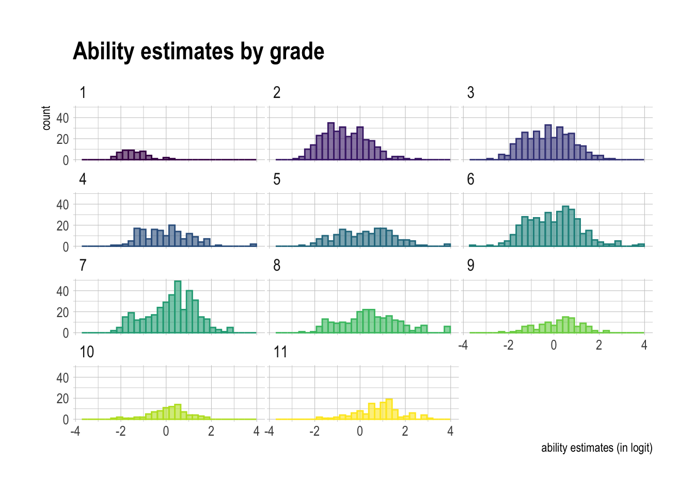

CVA: calibration #1
Yukie Toyama
2024-06-16
Wright Map
We calibrated all available response data from 2336 students for 81 items, using the Rasch model. The WrightMap shows item difficulty and ability estimates on the logit scale. Items are ordered by difficulty on the x-axis. The map visually shows that no items exist for the very top and the very bottom ends of the ability distribution along the y-axis. This may be because the calibration sample includes students who are outside of the target grade- / ability-levels (see Student Ability section below).

Item Difficulty
Item difficulty ranged from -1.57 to 1.54 logits, with mean = -0.35 and SD = -0.46.
| meam | sd | min | max | n |
|---|---|---|---|---|
| -0.35 | 0.65 | -1.57 | 1.54 | 81 |
A histogram and a boxplot below show the distribution of the item difficulty estimates. Given that the mean of the student ability is constrained to 0, the current CVA items as a set is relatively easier with the median of -0.46. The red line in the boxplot shows the mean item difficulty (-0.35).


Item Fit
All CVA items except for one (decorated = “quotation”) have infit values within the acceptable range (0.75-1.33), indicating that they fit to the Rasch model. In the Item Fit graph below, all except for one Infit value, are located between the blue vertical lines.
The misfitting item (“quotation”) is the most difficult item (1.54 logits) in the item set. The infit value of 1.35 indicates that the item elicits responses that are more random than the model excepts.
The first expected score curve below shows the discrepancy between the model-based ICC (item characteristic curve, in blue) and the observed-ICC (in black) for the misfitting item (“quotation”). The observed line indicates that the item does not discriminate the higher ability from the lower-ability students; in fact, students with lower ability estimates have slight better chance of success than students with higher ability estimates.
The second curve is for the item with decorated word “critical”. The Infit value for this item was 1.23, within the acceptable range, although the the item doesn’t appear to be discriminating the middle range of the ability distribution (around -1 to 1 logit).
A good explanation of item-fit statistics by Margaret Wu can be found here.


| formAndId | item | decorated | target | distractor1 | distractor2 | distractor3 | difficulty | Infit | Infit_t |
|---|---|---|---|---|---|---|---|---|---|
| b-5-6-8 | The quotation used in the mayor’s speech is from yesterday’s newspaper. | quotation | passage | symbol | example | theme | 1.54 | 1.34 | 6.03 |
| formAndId | item | decorated | target | distractor1 | distractor2 | distractor3 | difficulty | Infit | Infit_t |
|---|---|---|---|---|---|---|---|---|---|
| a-5-6-13 | He is very critical about his own work, even when his coworkers praise him. | critical | negative | exact | particular | careful | 1.15 | 1.23 | 5.18 |
Item Table
Table below shows the item difficulty and item fit for the 81 CVA items, in the descending order of item difficulty (i.e., the most difficulty item at the top).
Student Ability
| meam | sd | min | max | n |
|---|---|---|---|---|
| 0 | 1.15 | -3.5 | 3.94 | 2336 |
| user.grade | meam | sd | min | max | n |
|---|---|---|---|---|---|
| 1 | -1.41 | 0.59 | -2.33 | 0.25 | 51 |
| 2 | -0.67 | 0.99 | -2.95 | 2.59 | 313 |
| 3 | -0.23 | 1.03 | -2.89 | 2.67 | 316 |
| 4 | -0.02 | 1.07 | -2.43 | 3.91 | 166 |
| 5 | 0.24 | 1.21 | -2.46 | 3.86 | 194 |
| 6 | 0.00 | 1.14 | -3.50 | 3.85 | 380 |
| 7 | 0.23 | 1.08 | -2.28 | 2.89 | 371 |
| 8 | 0.43 | 1.30 | -2.62 | 3.94 | 231 |
| 9 | 0.23 | 0.93 | -2.23 | 2.20 | 111 |
| 10 | 0.11 | 0.85 | -2.34 | 1.73 | 86 |
| 11 | 0.80 | 0.97 | -1.83 | 3.01 | 117 |
